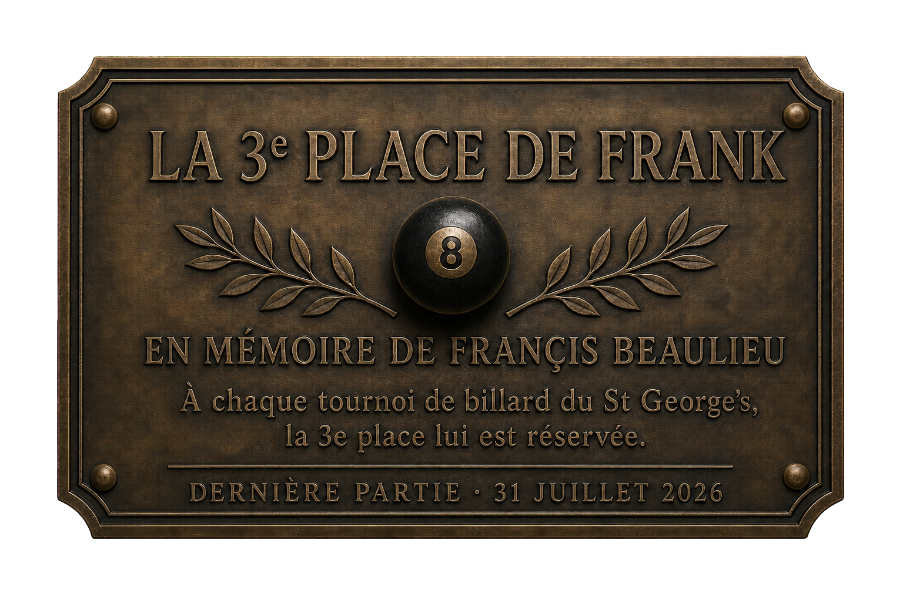
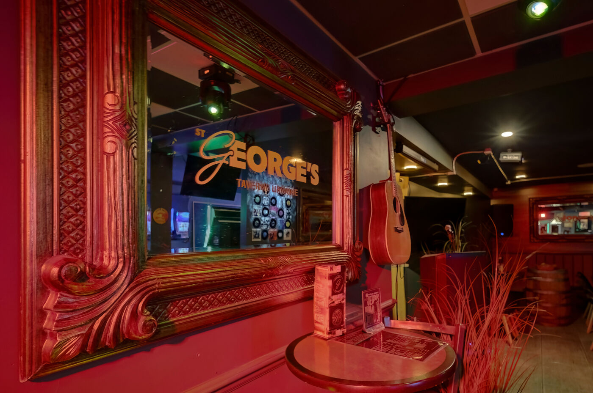
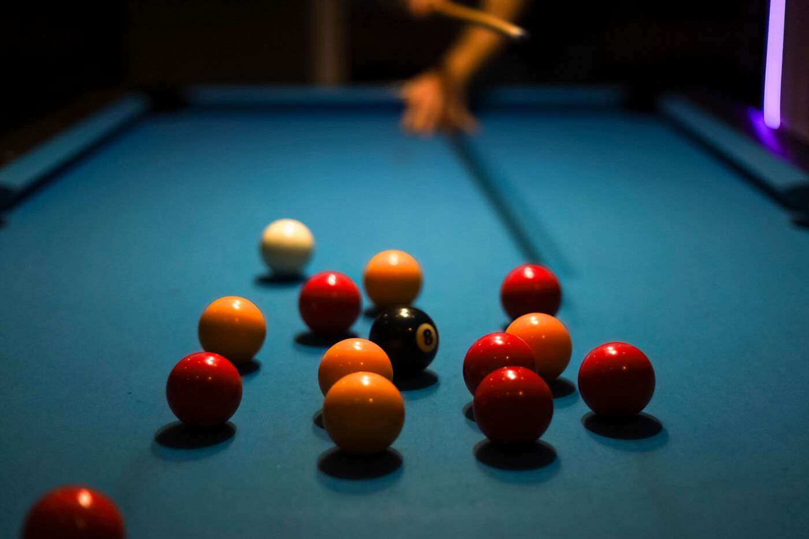
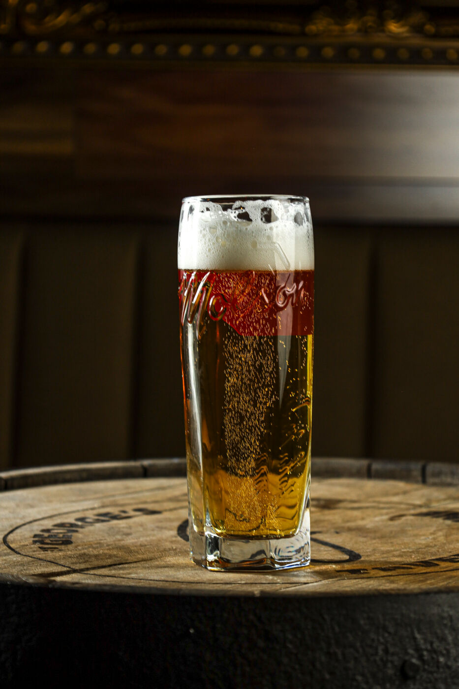
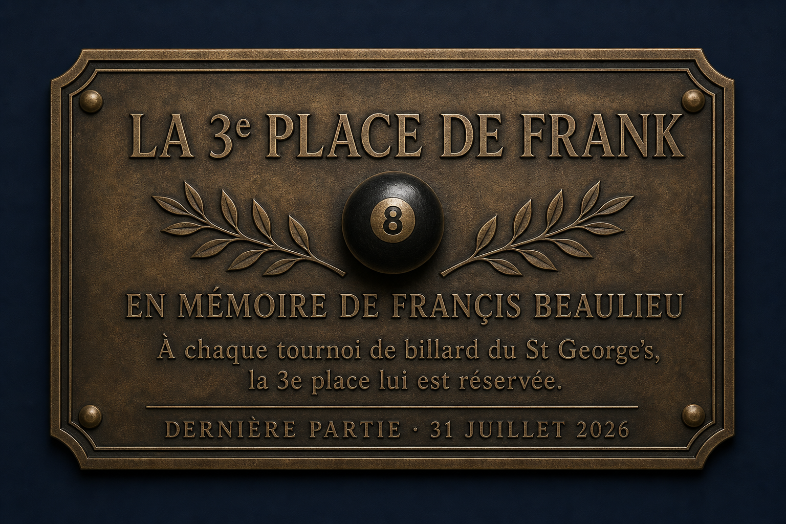

Bières en fût
Une sélection froide et variée, avec des spéciaux à découvrir chaque lundi.
Taverne de quartier · Laurentides
Une table généreuse, un verre bien servi et l’ambiance parfaite pour se retrouver.

DéfilerÀ propos
Au St George's, on vient pour l’ambiance et on reste pour les gens. Une taverne urbaine où se croisent une bière entre amis, une partie de billard et des soirées mémorables.
Ouvert tous les jours de 11 h à 3 h, au cœur de Saint-Jérôme.
97, rue Saint-Georges, Saint-Jérôme ↗Toute la semaine
Des rendez-vous pour chanter, rire, jouer et se retrouver. Consultez nos réseaux sociaux pour les détails et les thèmes de la semaine.
Bar principal
Lundi
Mardi
Mercredi
Jeudi
Vendredi
Samedi
Événements · Salle Point G
Tous les mardis
Un jeudi sur deux
Un jeudi sur deux
Jouer
Billard, jeux et une ambiance sans prétention : l’endroit parfait pour laisser le temps filer.
Mercredi · Golf-billard à 13 h
Vendredi · Tournoi de billard à 12 h 30
Au 2e étage · Salle Point G
Notre Salle Point G est une salle privée pouvant accueillir jusqu’à 70 personnes, parfaite pour vos événements corporatifs ou festifs.
Profitez de 3 écrans de 65”, d’un système de son professionnel, d’un service de bar complet et de notre chef propriétaire, qui concoctera un menu sur mesure selon vos goûts.
Découvrir la Salle Point G →L’ambiance St George's
Le meilleur reste à venir découvrir en personne.



Passez nous voir
Ouvert 7 jours sur 7, de 11 h à 3 h. La cuisine régulière sera de retour sous peu.
97, rue Saint-Georges
Saint-Jérôme, Québec
